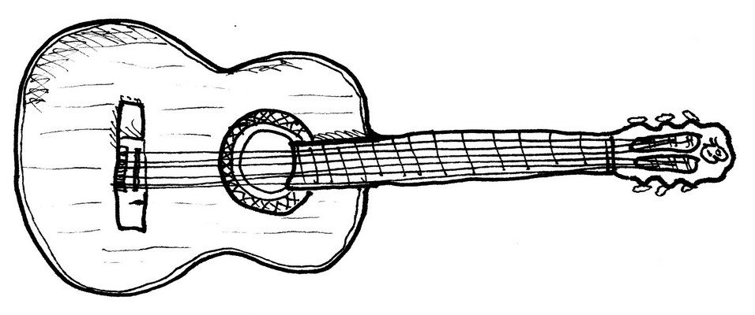

728 La Bamba
transpose
font size
To dance “the Bamba” you need a little grace, for me, for you. For you I’ll be. I am not a sailor, I am a captain.
[G⁷]Para bailar la [C]Bamba[F],[G]
Para bailar la [C]Bamba se [F]nece[G]sita una poca de [C]gracia[F][G]
Una poca de [C]gracia pa’ [F]mi, pa’ [G]ti y arriba y ar[C]riba[F][G]
Ah y arriba y arri[C]ba por [F]ti se[G]ré, por ti se[C]ré, por [G]ti se[G]ré
Yo no soy mari[C]nero[F][G]
Yo no soy mari[C]nero, soy [F]capi[G]tán,
Soy capi[C]tán, soy [F]capi[G]tán.
¡[C]Bam[F]ba [G]bamba!
¡[C]Bam[F]ba [G]bamba!
¡[C]Bam[F]ba [G]bamba!
[G⁷]Para bailar la [C]Bamba[F],[G]
Para bailar la [C]Bamba se [F]nece[G]sita una poca de [C]gracia,[F][G]
Una poca de [C]gracia pa’ [F]mi, pa’ [G]ti Ah y arriba y ar[C]riba[F][G]
Ah y arriba y arri[C]ba por [F]ti se[G]ré, por ti se[C]ré, por [G]ti se[G]ré
¡[C]Bam[F]ba [G]bamba!
¡[C]Bam[F]ba [G]bamba!
¡[C]Bam[F]ba [G]bamba!